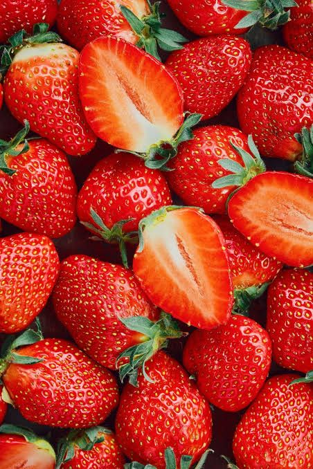
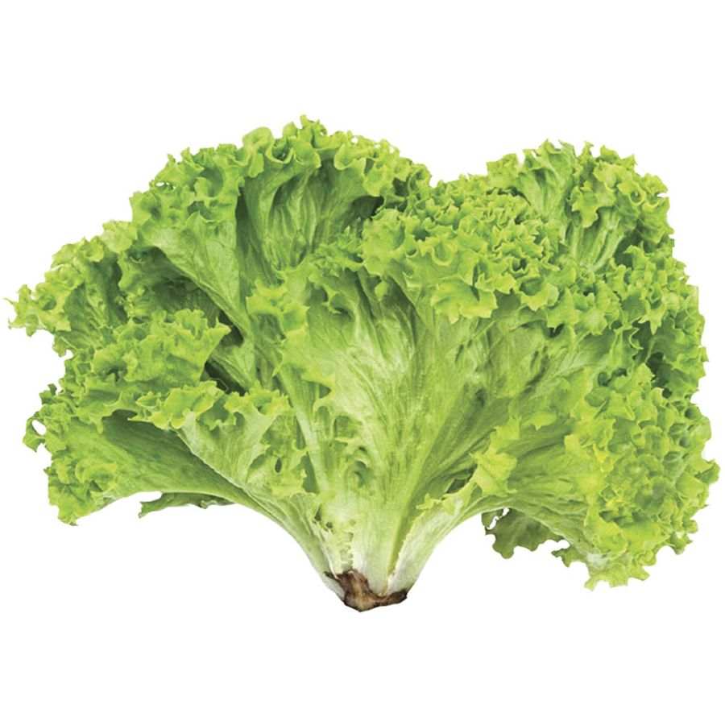
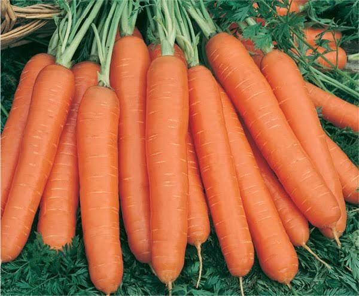
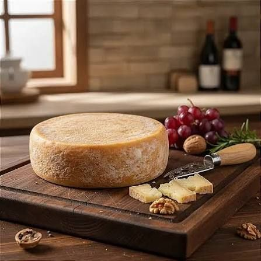

100% Orgânico
Do campo para a sua mesa, sem agrotóxicos
Alimentos frescos, colhidos de pequenos produtores e entregues toda semana na sua casa.
Ver produtos100% Orgânico
Alimentos frescos, colhidos de pequenos produtores e entregues toda semana na sua casa.
Ver produtos
R$ 12,90 / bandeja

R$ 4,50 / maço

R$ 7,90 / kg

R$ 34,00 / peça
Todos os produtores parceiros seguem as regras da produção orgânica certificada.
Os alimentos são colhidos no máximo dois dias antes da entrega.
Compramos direto de agricultores familiares, e o valor chega até eles.
A alface chega crocante e com gosto de horta. Nunca mais comprei no mercado.
Meus filhos pedem a cenoura da BioVerde todo dia. A entrega é sempre pontual.